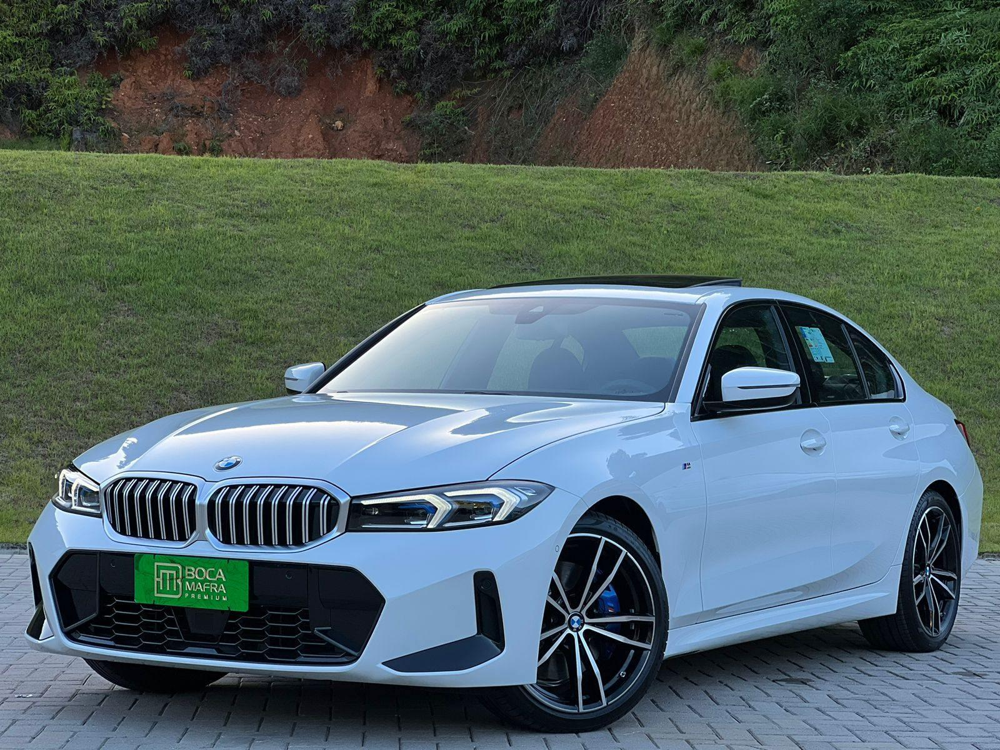
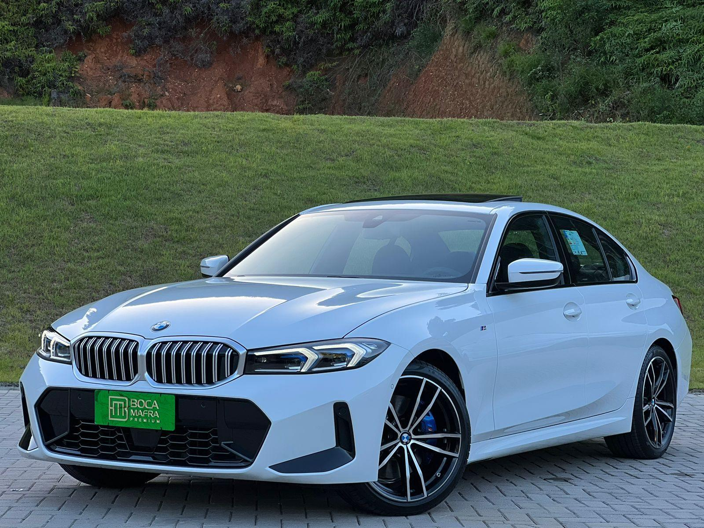

Serviços BMW
Serviços BMW

 

Cuidados extremos da BMW
- Plano de manutenção abrangente adaptado às especificações da BMW.
- Inclui serviços essenciais como trocas de óleo, substituições de filtros, verificações de fluidos e rodízios de pneus para manter seu BMW funcionando perfeitamente.
Atualizações de desempenho BMW
- Instalação de peças de desempenho originais BMW e atualizações.
- Melhora a potência, o manuseio e a dinâmica geral de direção do seu BMW.
Diagnóstico e Reparo BMW
- Ferramentas de diagnóstico avançadas e experiência para identificar e resolver problemas específicos dos veículos BMW.
- Diagnóstico e reparo de sistemas de motor, elétricos e mecânicos para garantir desempenho ideal.
Detalhamento interno da BMW
- Limpeza profissional e restauração do interior do seu BMW.
- Inclui limpeza de estofados, restauração de painel e condicionamento de couro para um interior imaculado.
Ajuste de suspensão de desempenho BMW
- Ajuste de suspensão personalizado para otimizar o manuseio e o conforto para seu BMW.
- Ajuste dos componentes da suspensão para melhor estabilidade e agilidade.
Serviços de sistema de freio BMW
- Inspeção, reparo e substituição de pastilhas de freio, discos de freio e fluido de freio.
- Garante desempenho de frenagem preciso e segurança para seu BMW.
Ajuste de desempenho do motor BMW
- Ajuste personalizado do motor para maximizar a potência e a eficiência do seu BMW.
- Otimização dos parâmetros do motor para melhor desempenho e capacidade de resposta.
Atualizações do sistema de escapamento BMW
- Instalação de sistemas de exaustão de alto desempenho para melhor som e potência.
- Melhora o caráter esportivo e a estética do seu BMW.
Serviços de rodas e pneus BMW
- Serviços de alinhamento de rodas, rodízio de pneus e balanceamento de pneus adaptados às especificações da BMW.
- Garante o desgaste ideal dos pneus e o desempenho de manuseio do seu BMW.
Calibração avançada de assistência ao motorista BMW
- Calibração e ajuste de sistemas avançados de assistência ao motorista (ADAS) para operação precisa.
- Garante a segurança e a funcionalidade dos recursos ADAS em seu BMW.